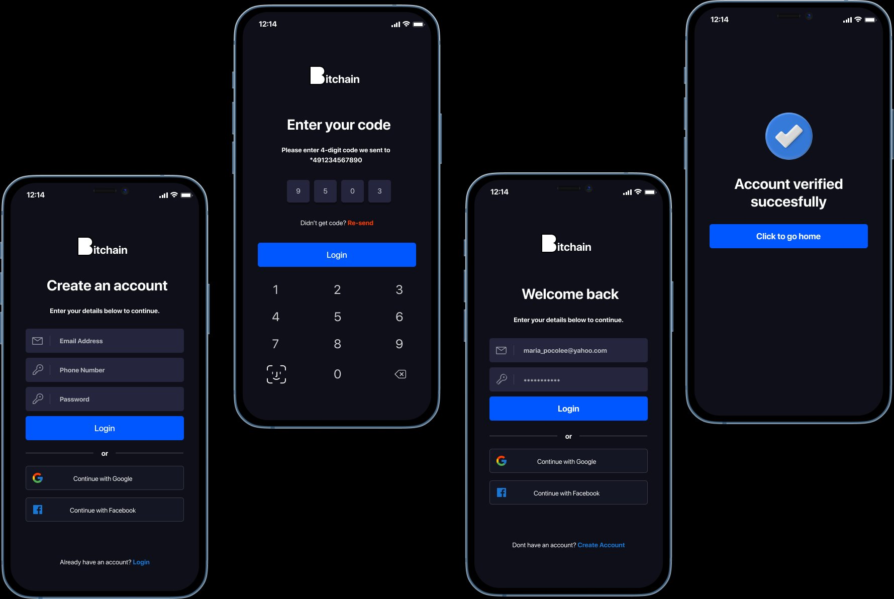
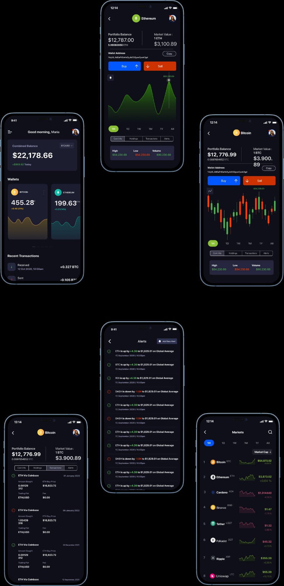
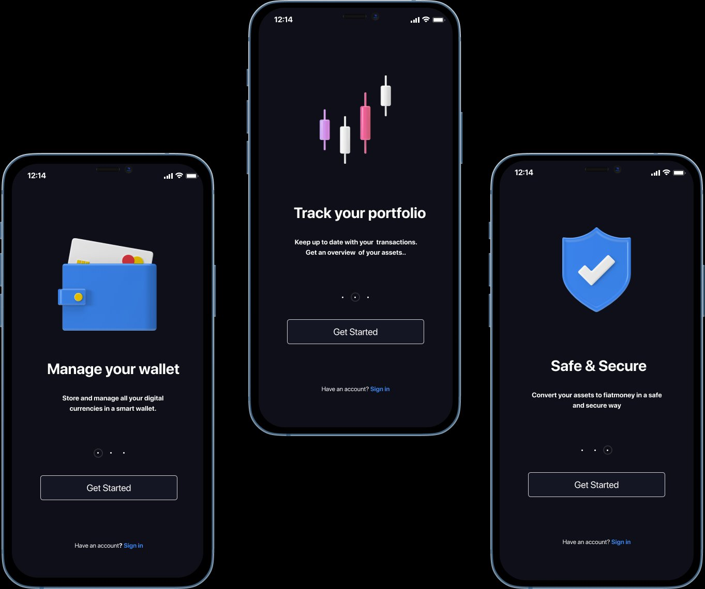
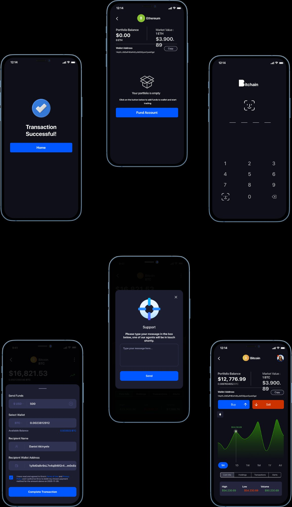

As cryptocurrency moves beyond speculation into daily payments, the next wave of users needs wallets that feel as simple as banking apps. Bitchain is a mobile crypto wallet designed for managing, sending, and tracking digital assets without the complexity of traditional exchanges.
Crypto-curious users aged 18-35 who hold or want to hold digital assets but find current wallets intimidating
A mobile wallet that makes crypto management feel as natural as checking a bank balance
As crypto adoption grows beyond early adopters into mainstream payments and savings
Mobile-first (iOS + Android), used on the go, at point of sale, and for peer-to-peer transfers
Most first-time crypto users abandon wallet setup before they finish it. Current tools assume blockchain literacy that mainstream users lack
Simplified onboarding, plain-language UI, real-time portfolio views, and transparent fee structures
I conducted 12 in-depth interviews with people who either hold crypto casually or are interested but intimidated. I also ran a competitive audit of Coinbase Wallet, MetaMask, Trust Wallet, and Phantom to identify UX gaps.
Users wanted three things: see total balance in their local currency, send crypto as easily as a bank transfer, and understand fees before confirming anything.
All competitors use blockchain jargon in their UI. None show fees upfront. Onboarding flows average 8+ steps. No competitor effectively explains what users are doing at each step.
People who hold crypto casually or are interested but intimidated.
Led to: fiat-first balances, every participant asked what their holdings were worth in local currency.Coinbase Wallet, MetaMask, Trust Wallet and Phantom, scored on language, fee disclosure and onboarding length.
Led to: plain language and upfront fees, the two things no audited wallet did.Two inputs, and the specific decision each one forced. Research that changed nothing is not listed.
| Wallet | Plain language in the UI | Fees shown before confirming | Onboarding length |
|---|---|---|---|
| Coinbase Wallet | No | No | not scored separately |
| MetaMask | No | No | not scored separately |
| Trust Wallet | No | No | not scored separately |
| Phantom | No | No | not scored separately |
| The gap | Yes | Yes | One idea per screen, and no blockchain term a user has to learn before they can act |
Only the criteria the audit actually scored are shown. Onboarding length was recorded as an average across the four, 8+ steps, so no per-wallet figure is claimed here.
"I get paid in ETH sometimes but I have no idea what my actual balance is in euros."
"I want to accept crypto payments but the wallet apps feel like they are made for developers."
"My friends told me to buy Bitcoin but the apps scared me away."
The dark theme signals premium and security. Every screen prioritizes the user's balance and recent activity. Blockchain jargon is replaced with plain language. Fees are shown upfront, never hidden.
Structural breakdown of the shipped screen, not a screenshot and not an original wireframe.
Dark signals premium and security. In testing, 10 of 12 participants described the dark interface as "more secure" and "more professional".
It is what the competitors ship, so it would have been the safe call. The trust reading in testing was measured against those light-themed competitors, and dark won it.
Every audited wallet uses blockchain jargon and none of them explains what the user is doing at each step. The product target was a wallet that reads like a banking app, so the vocabulary had to go.
"Gas fees" confused every participant in testing. Explaining a term at the moment someone is about to move money is a cost paid on every transaction, not once.

Onboarding carries one idea per screen, so first-time users are never asked to learn blockchain terms before they can act.


PIN and biometric auth make security feel routine; the coin detail leads with local-currency value, not token amounts, so balances read like a bank app.

10/12 users said the dark interface felt "more secure" and "more professional" compared to light-themed competitors.
Schematic of the change, not a screenshot. Only the revised version shipped; the first build is reconstructed from the finding it fixed.
Two changes in one: the term was renamed from "gas fee" to "network fee", and the amount moved ahead of the confirmation instead of behind it.
"Send crypto" should feel exactly like "Send money." The design challenge is not hiding complexity but translating it into familiar patterns.
The onboarding sequence does more for trust than any security badge. A clean, guided, no-surprises first experience tells users: this app respects your time and your money.